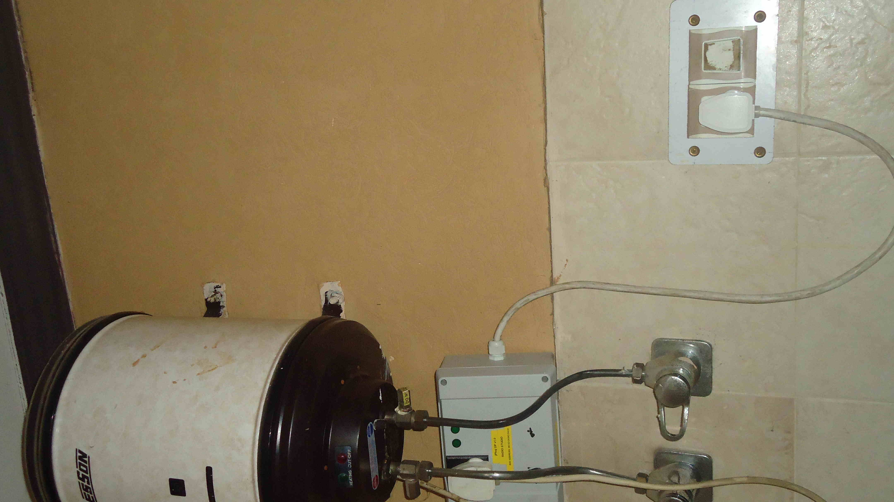

Electrical meters
A smart meter recorded electricity at the household level. Current transformers measured individual circuits, and plug-in meters recorded appliance use.
Find the electricity files ↓New Delhi, India · 2013 field deployment
Indian Dataset for Ambient Water and Energy. We recorded electricity, water, light, temperature and motion in one home during a 73-day field study.





Official release · v1.0.0
Download each file separately. The Zenodo record also has annotations, diagnostics and alternate exports. The data are CC BY 4.0.
Run three examples with about 17 MB of data. The notebook downloads the files from Zenodo and checks them before use.
Use the 2.4 MB motion file to count 2013 detections by local hour. The script needs only Python 3.
Save pir.csv.gz next to the script and run it with Python 3. Leave the file compressed.
from collections import Counter
from datetime import datetime, timedelta, timezone
import csv
import gzip
ist = timezone(timedelta(hours=5, minutes=30))
start = datetime(2013, 1, 1, tzinfo=ist).timestamp()
end = datetime(2014, 1, 1, tzinfo=ist).timestamp()
counts = Counter()
with gzip.open("pir.csv.gz", "rt", newline="") as source:
for row in csv.DictReader(source):
timestamp = int(row["timestamp"])
if start <= timestamp < end:
hour = datetime.fromtimestamp(timestamp, ist).hour
counts[hour] += 1
for hour in range(24):
print(f"{hour:02d}:00 {counts[hour]}")For electricity CSVs, see the release guide for meter labels and how to align the two mains.
We set up sensors in a three-storey New Delhi home in 2013. The measurements capture intermittent power and water supply, changes in voltage and gaps in network connectivity.
A smart meter recorded electricity at the household level. Current transformers measured individual circuits, and plug-in meters recorded appliance use.
Find the electricity files ↓Meters recorded pulses as water entered the home's system and left the overhead tank. Use pulse timing to study supply and use. Estimating volume requires calibration.
Find the water file ↓Indoor nodes measured light on the device's 0 to 100 scale and temperature in Fahrenheit. Use the node ID to follow one sensor over time.
Find the light and temperature file ↓The motion CSV records a timestamp and node ID for each detection. Group detections by hour to see when the sensors picked up activity.
Find the motion file ↓The study lasted 73 days. Coverage varies by sensor, and some electricity readings extend into September. See the deployment notes and collection software.
Run any of these examples in the starter notebook.
MOTION · 2.4 MB
Compare the number of detections across local hours. Try the same analysis for one node to see how its pattern differs.
Motion CSVAMBIENT · 14 MB
Compare light and temperature at the same sensor. Keep gaps in the plot so you can see when readings are missing.
Light and temperature CSVELECTRICITY · 619 KB
Compare circuit measurements with the recorded times when an iron was switched on and off.
Controlled circuit traceThe release includes the original electricity files and documented CSV exports for the other recovered streams.
Original meter CSVs and appliance labels, plus the historical NILMTK HDF5 representation. Power, voltage and other electrical measurements depend on the meter.electricity.tar.gz · iawe.h5
Water meter records contain pulse states. Estimating flow or volume requires calibration.Legacy CSV and SQL-derived alternatives
Light on the device’s 0–100 scale and temperature in Fahrenheit, indexed by sensor node and timestamp.Legacy CSV and SQL-derived alternatives
Each passive infrared detection has a timestamp and node ID. Use the records to study motion events.
System and acquisition conditions, including client and server times. Device IDs and types are replaced with stable pseudonyms.
A controlled-event trace and four original companion streams. The original repository documents 101 controlled electrical events on August 4, 2013.Includes selected companion files, not every original public file
Use one version of each ambient or water stream. The exports have the same number of rows, and the release does not establish that the readings match. The raw electricity CSVs and legacy HDF5 have different row counts.
Research resources
Use the original deployment code and sensor mappings to trace a file back to the hardware that produced it.
Sensor software, wiring and field notes from the original study.
METADATAThe published appliance inventory. Archive meter labels and inventory IDs are different identifier systems.
ANALYSISScripts from the original study for working with temperature and electricity. They use older dependencies.
Also explore: Database schemas · Circuit mappings · Original annotations · NILMTK metadata
See the release guide for file formats, time coverage and known issues.
Read the original author FAQNo. Coverage, sampling and missingness vary by stream. The 73-day figure describes the original deployment. Some raw electricity records extend into September. Use the release data dictionary and inspect the actual timestamps for your chosen channels.
Use the original CSVs to work with raw timestamps and choose how to handle missing readings. The historical HDF5 is a separate legacy representation with different row counts. For whole-home active power, deduplicate and align mains meters 1 and 2 before summing. Keep the whole-home value missing when either mains channel lacks a reading.
Sensor timestamps are Unix seconds, representing UTC instants. Parse as UTC, then convert to Asia/Kolkata for local time. Water timestamps can be fractional. Negative and implausible legacy values remain in the archive. The controlled electrical annotation table instead uses IST clock times.
No. The records contain pulse states and acquisition anomalies, not calibrated volume. Validate timestamps, transitions and repeated readings. A complete fixture-level calibration table was not verified among the recovered artifacts.
The archive contains the recovered research files that the team cleared for release. Selected annotations are included. The primary electricity archive includes appliance measurements. The separate historical jPlug file contains device identifiers and was excluded. Diagnostics use pseudonymous device IDs.
Cite both the original BuildSys 2013 paper and the version-specific dataset DOI below. If you use NILMTK software, cite the NILMTK paper as well. Dataset files are CC BY 4.0. The software and original paper have their own terms.
Paper and citations
BuildSys 2013 · 5th ACM Workshop on Embedded Systems for Energy-Efficient Buildings
@inproceedings{batra2013different,
author = {Batra, Nipun and Gulati, Manoj and Singh, Amarjeet and Srivastava, Mani B.},
title = {It's Different: Insights into Home Energy Consumption in India},
booktitle = {Proceedings of the 5th ACM Workshop on Embedded Systems for Energy-Efficient Buildings},
year = {2013},
pages = {3:1--3:8},
publisher = {ACM},
doi = {10.1145/2528282.2528293}
}Please cite both
Version 1.0.0 · Zenodo · 2026
Use the version DOI for the files you analyzed.
@misc{batra2026iawe,
author = {Batra, Nipun and Gulati, Manoj and Singh, Amarjeet and Srivastava, Mani B.},
title = {{iAWE}: Indian Dataset for Ambient Water and Energy (Official Archive)},
year = {2026},
publisher = {Zenodo},
version = {1.0.0},
doi = {10.5281/zenodo.24361973}
}